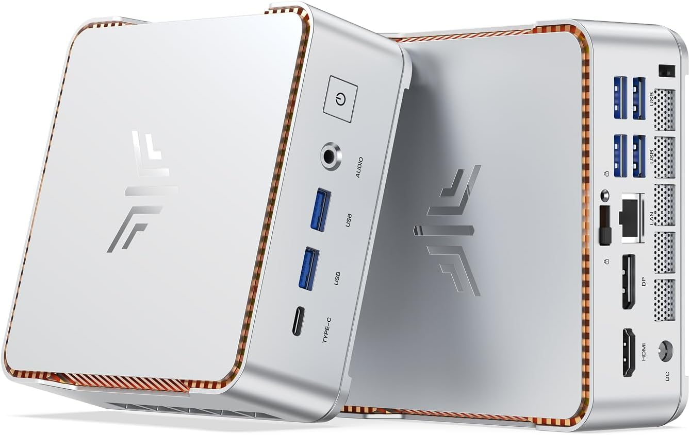

Proxmox VM 101
Home Assistant OS
The primary automation environment for integrations, dashboards, devices, and local voice orchestration.
This in-home lab turns a compact KAMRUI HYPER H2 into a private, modular platform for home automation, local AI, voice services, networking, and resilient storage.

Virtual machines and containers keep the services isolated, reproducible, and easy to test as the lab evolves.
The primary automation environment for integrations, dashboards, devices, and local voice orchestration.
Network-wide DNS filtering and local name resolution for the private home infrastructure.
Reverse proxy and secure service routing, with external storage available for media workloads.
Local AI for voice, vision, coding, automation, and document context without sending household data to a cloud service.
Private voice pipeline support for satellite audio, Piper speech, and Home Assistant communication.
Secure remote access to the home network through a dedicated connector with a small resource footprint.
Installation procedures, configuration notes, and reference material turn the working lab into a repeatable blueprint.